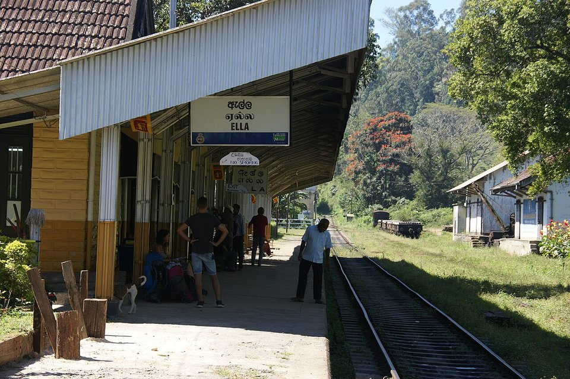
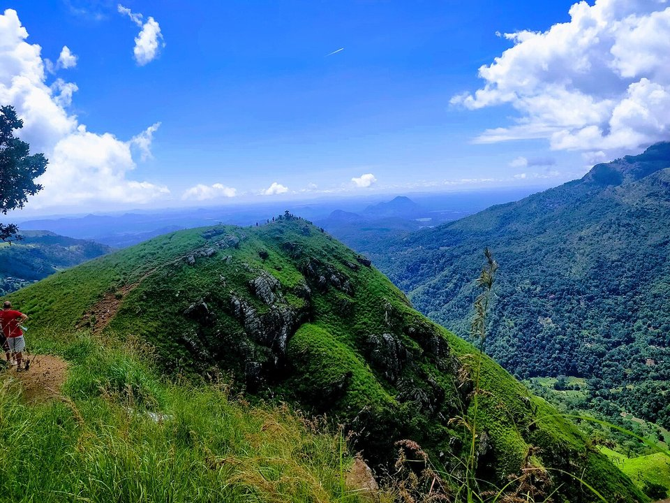
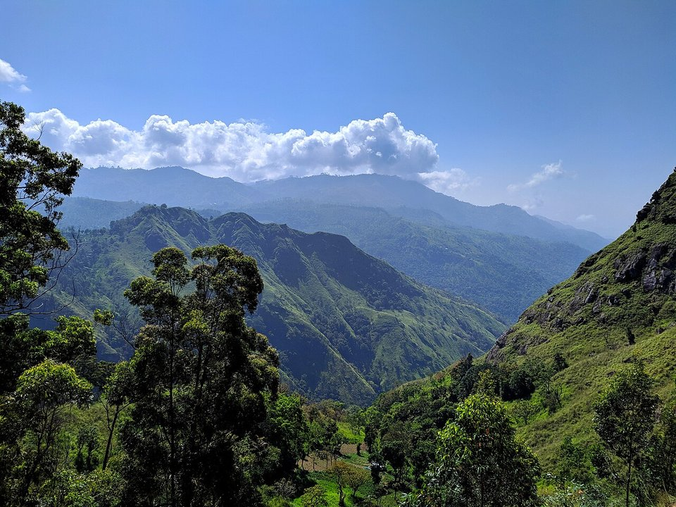
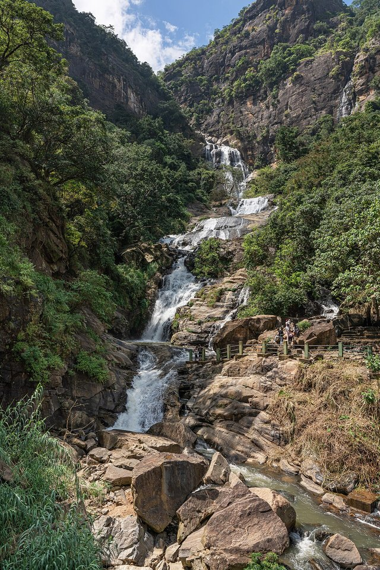
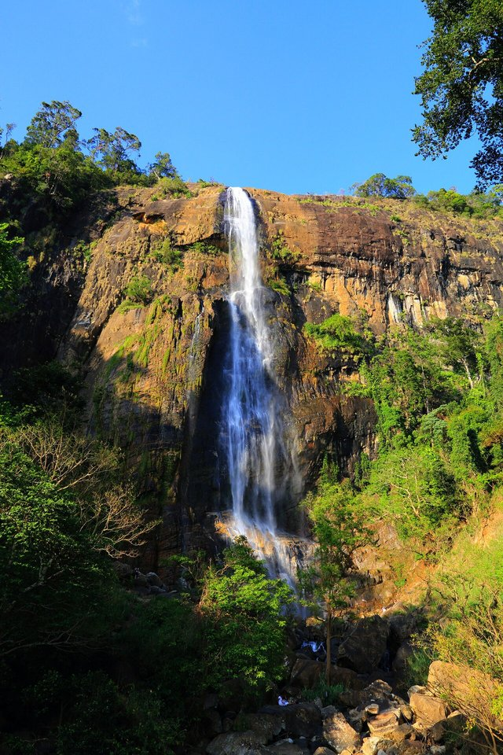
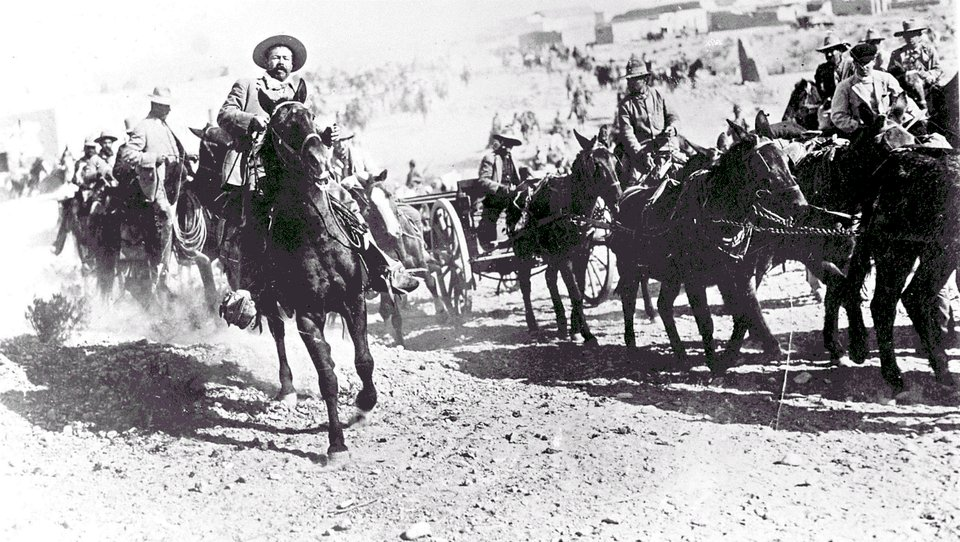
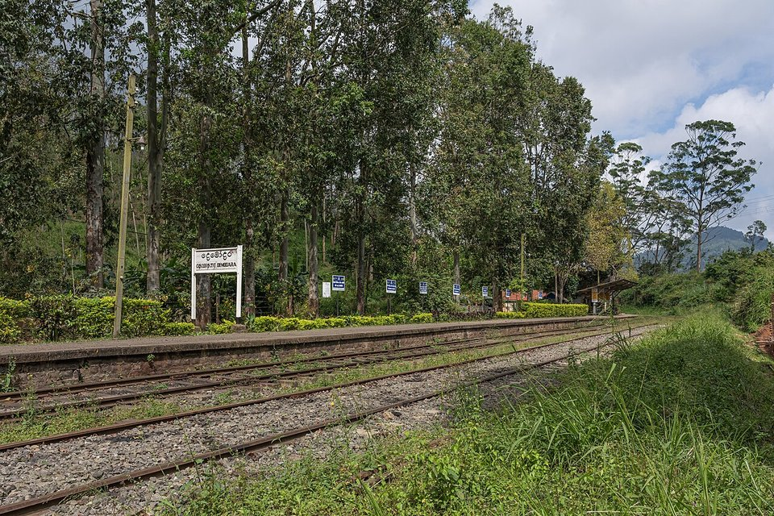
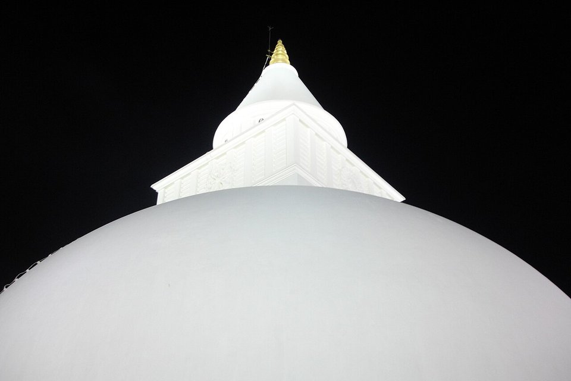

Top Destinations in Uva Province
Discover the signature highlights and attractions across this province.

Scenic Train JourneysDemodara Nine Arch Bridge (Bridge in the Sky)
The world-famous colonial railway viaduct hidden in a lush jungle valley near Ella, built entirely of stone, brick, and cement with zero steel during World War I.

Hiking & TrekkingLittle Adam's Peak (Punchi Sri Pada)
An accessible, highly rewarding 45-minute mountain hike through lush tea estates, terminating at a series of panoramic ridgeline peaks overlooking Ella Gap.

Hiking & TrekkingElla Rock Summit Trek & Ella Gap
The ultimate hiking challenge in Ella, a rewarding 4-hour trek along active railway tracks, through rubber and eucalyptus forests, to a dizzying 1,000m sheer cliff precipice.

WaterfallsRavana Falls & Ravana Cave
A spectacular 25-meter tiered roadside waterfall cascading over oval-shaped concave rock ledges, steeped in the ancient Ramayana legend of King Ravana and Sita.

WaterfallsDiyaluma Falls & Upper Infinity Rock Pools
The second highest waterfall in Sri Lanka (220 meters), famous for its natural upper infinity rock pools where hikers can swim right on the edge of the precipice.
 Waterfalls
Waterfalls
Dunhinda Falls (The Smoky Cascade)
One of Sri Lanka's most beautiful and powerful waterfalls, a 64-meter roaring cascade that creates a permanent cloud of smoky vapor and mist.

Viewpoints & PanoramasLipton's Seat Haputale
The legendary clifftop vantage point at 1,970m elevation where tea baron Sir Thomas Lipton surveyed his vast Ceylon tea empire, looking across seven provinces.

Scenic Train JourneysDemodara Railway Loop
A genius of colonial railway engineering: a 360-degree spiral loop where the track curves around a mountain hill and emerges through a tunnel directly beneath the railway station.

Temples & Religious SitesKataragama Kiri Vehera Ancient Stupa
The sacred 6th-century BCE white stupa built by King Mahasena on the spot where the Buddha delivered discourses to King Mahasena on his third visit to Sri Lanka.